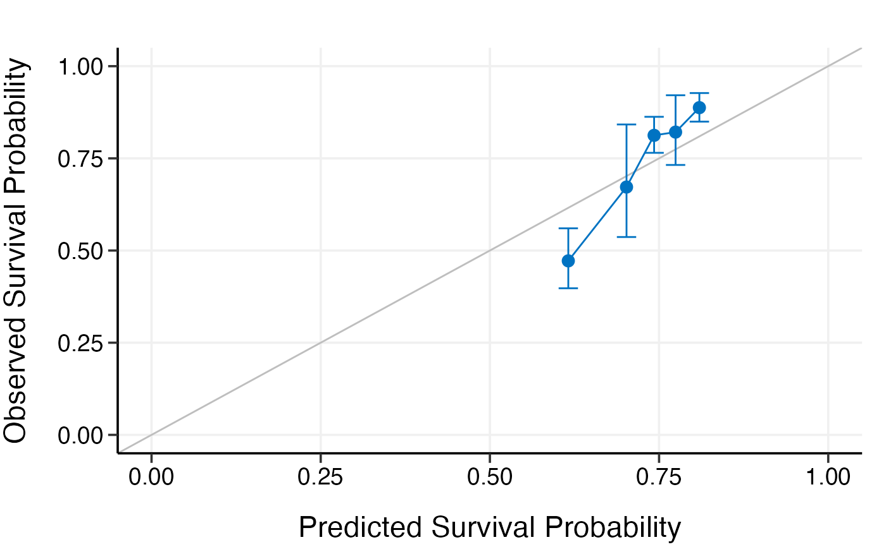
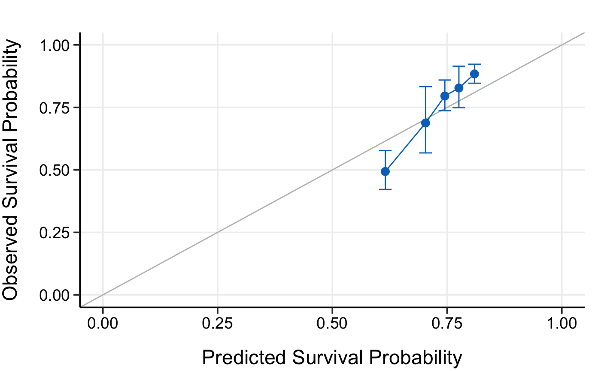

Calibrate high-dimensional Cox models
calibrate(x, time, event, model.type = c("lasso", "alasso", "flasso", "enet", "aenet", "mcp", "mnet", "scad", "snet"), alpha, lambda, pen.factor = NULL, gamma, lambda1, lambda2, method = c("fitting", "bootstrap", "cv", "repeated.cv"), boot.times = NULL, nfolds = NULL, rep.times = NULL, pred.at, ngroup = 5, seed = 1001, trace = TRUE)
| x | Matrix of training data used for fitting the model; on which to run the calibration. |
|---|---|
| time | Survival time.
Must be of the same length with the number of rows as |
| event | Status indicator, normally 0 = alive, 1 = dead.
Must be of the same length with the number of rows as |
| model.type | Model type to calibrate. Could be one of |
| alpha | Value of the elastic-net mixing parameter alpha for
|
| lambda | Value of the penalty parameter lambda to use in the model fits on the resampled data. From the Cox model you have built. |
| pen.factor | Penalty factors to apply to each coefficient. From the built adaptive lasso or adaptive elastic-net model. |
| gamma | Value of the model parameter gamma for MCP/SCAD/Mnet/Snet models. |
| lambda1 | Value of the penalty parameter lambda1 for fused lasso model. |
| lambda2 | Value of the penalty parameter lambda2 for fused lasso model. |
| method | Calibration method.
Options including |
| boot.times | Number of repetitions for bootstrap. |
| nfolds | Number of folds for cross-validation and repeated cross-validation. |
| rep.times | Number of repeated times for repeated cross-validation. |
| pred.at | Time point at which calibration should take place. |
| ngroup | Number of groups to be formed for calibration. |
| seed | A random seed for resampling. |
| trace | Logical. Output the calibration progress or not.
Default is |
data("smart") x <- as.matrix(smart[, -c(1, 2)]) time <- smart$TEVENT event <- smart$EVENT y <- survival::Surv(time, event) # Fit Cox model with lasso penalty fit <- fit_lasso(x, y, nfolds = 5, rule = "lambda.1se", seed = 11) # Model calibration by fitting the original data directly cal.fitting <- calibrate( x, time, event, model.type = "lasso", alpha = 1, lambda = fit$lambda, method = "fitting", pred.at = 365 * 9, ngroup = 5, seed = 1010 )#> Start fitting ...# Model calibration by 5-fold cross-validation cal.cv <- calibrate( x, time, event, model.type = "lasso", alpha = 1, lambda = fit$lambda, method = "cv", nfolds = 5, pred.at = 365 * 9, ngroup = 5, seed = 1010 )#> Start fold 1 #> Start fold 2 #> Start fold 3 #> Start fold 4 #> Start fold 5print(cal.fitting)#> High-Dimensional Cox Model Calibration Object #> Random seed: 1010 #> Calibration method: fitting #> Model type: lasso #> glmnet model alpha: 1 #> glmnet model lambda: 0.01620998 #> glmnet model penalty factor: not specified #> Calibration time point: 3285 #> Number of groups formed for calibration: 5summary(cal.fitting)#> Calibration Summary Table #> Predicted Observed Lower 95% Upper 95% #> 1 0.5867665 0.4756039 0.4037162 0.5602922 #> 2 0.7013731 0.6649731 0.5400804 0.8187470 #> 3 0.7570641 0.8402387 0.7977191 0.8850247 #> 4 0.7969468 0.8009555 0.7048913 0.9101115 #> 5 0.8393141 0.9011939 0.8687962 0.9347997plot(cal.fitting)print(cal.cv)#> High-Dimensional Cox Model Calibration Object #> Random seed: 1010 #> Calibration method: k-fold cross-validation #> Cross-validation folds: 5 #> Model type: lasso #> glmnet model alpha: 1 #> glmnet model lambda: 0.01620998 #> glmnet model penalty factor: not specified #> Calibration time point: 3285 #> Number of groups formed for calibration: 5summary(cal.cv)#> Calibration Summary Table #> Predicted Observed Lower 95% Upper 95% #> 1 0.5838591 0.4675519 0.3945238 0.5540979 #> 2 0.7029040 0.6982853 0.5867801 0.8309796 #> 3 0.7566084 0.8315265 0.7875912 0.8779128 #> 4 0.7975700 0.7993794 0.7070266 0.9037955 #> 5 0.8387503 0.9090449 0.8776173 0.9415978plot(cal.cv)# # Test fused lasso, SCAD, and Mnet models # data(smart) # x = as.matrix(smart[, -c(1, 2)])[1:500, ] # time = smart$TEVENT[1:500] # event = smart$EVENT[1:500] # y = survival::Surv(time, event) # # set.seed(1010) # cal.fitting = calibrate( # x, time, event, model.type = "flasso", # lambda1 = 5, lambda2 = 2, # method = "fitting", # pred.at = 365 * 9, ngroup = 5, # seed = 1010) # # cal.boot = calibrate( # x, time, event, model.type = "scad", # gamma = 3.7, alpha = 1, lambda = 0.03, # method = "bootstrap", boot.times = 10, # pred.at = 365 * 9, ngroup = 5, # seed = 1010) # # cal.cv = calibrate( # x, time, event, model.type = "mnet", # gamma = 3, alpha = 0.3, lambda = 0.03, # method = "cv", nfolds = 5, # pred.at = 365 * 9, ngroup = 5, # seed = 1010) # # cal.repcv = calibrate( # x, time, event, model.type = "flasso", # lambda1 = 5, lambda2 = 2, # method = "repeated.cv", nfolds = 5, rep.times = 3, # pred.at = 365 * 9, ngroup = 5, # seed = 1010) # # print(cal.fitting) # summary(cal.fitting) # plot(cal.fitting) # # print(cal.boot) # summary(cal.boot) # plot(cal.boot) # # print(cal.cv) # summary(cal.cv) # plot(cal.cv) # # print(cal.repcv) # summary(cal.repcv) # plot(cal.repcv)